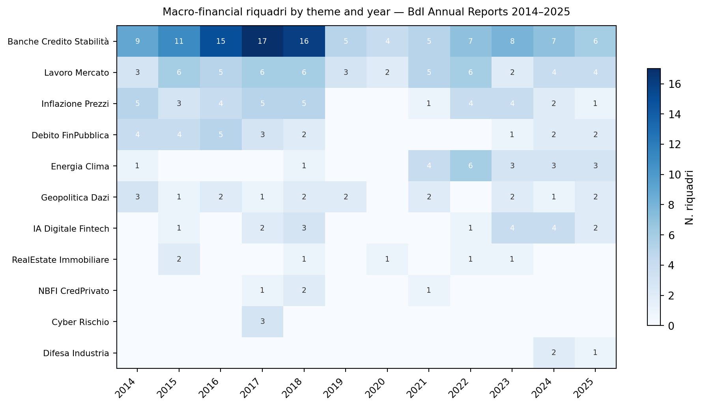
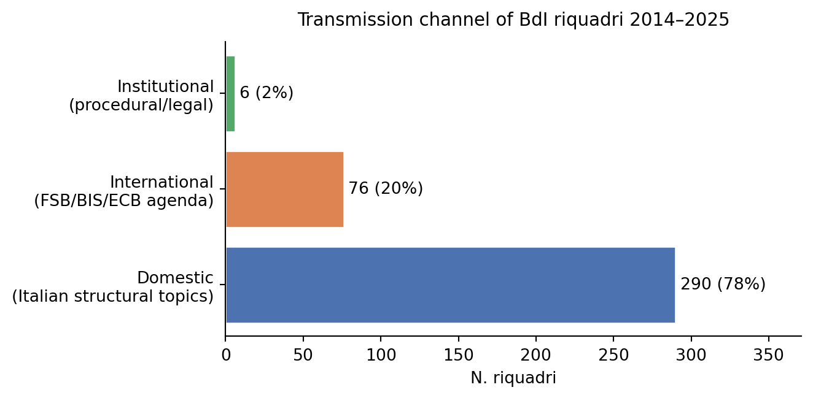
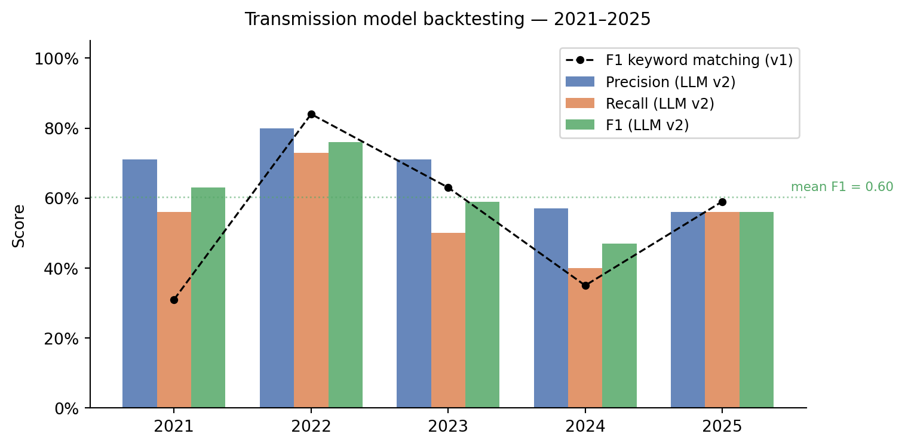

Forecasting Central-Bank Analytical Agendas
Exploratory evidence from 372 boxes in Banca d’Italia’s Annual Reports, 2014–2025
Paolo Volterra ![]()
Banca d’Italia’s Annual Report has a stable chapter structure, but its analytical boxes (riquadri) provide a flexible editorial space for new evidence and emerging risks. This paper builds a dataset of 372 boxes published in twelve reports (data years 2014–2025) and classifies their titles by theme and transmission channel with a locally run instruction-tuned language model (qwen2.5:7b-instruct, temperature 0). It then evaluates a double-filter transmission hypothesis: international macrofinancial topics are first developed by agenda-setting institutions and subsequently normalized by bodies such as the FSB, ECB, BIS and ESRB before entering a national central bank’s analytical agenda. Annual signal matrices, manually coded from a 107-document institutional watchlist, are compared retrospectively with the themes observed in 2021–2025. Mean F1 is 0.60 (annual range 0.47–0.76), compared with 0.54 for a keyword-based classification baseline. The result is exploratory rather than causal or genuinely out of sample: the evaluation covers five years, signal coding involves judgement, and no human-labelled gold standard is available for the LLM taxonomy. The channel classification nevertheless gives an important scope condition: 78% of boxes are domestic and 2% institutional, leaving 20% in the international channel addressed by the hypothesis. The paper closes with explicitly uncalibrated, pre-verifiable scenarios for the report due in 2027, led by private credit/NBFI, financial fragmentation, tokenisation, AI-related financial risk and cyber resilience.
central bank communication, financial stability, agenda-setting, LLM classification, institutional isomorphism, Banca d’Italia, riquadri, transmission model
Versione citabile su Zenodo, con il PDF: doi.org/10.5281/zenodo.20756501.
1 Introduction
Central bank communication has evolved from a tool of last resort to a primary policy instrument (Woodford 2005; Blinder et al. 2008). Yet the literature has largely focused on monetary policy communication — forward guidance, inflation targeting statements, press conference transcripts — while the communication of financial stability assessments has received comparatively less attention (Čihák 2006; Nagy 2022).
Annual reports of central banks are a particularly understudied channel. Unlike financial stability reviews (FSRs), which are explicitly forward-looking risk assessments, annual reports embed the institution’s overall analytical agenda: they reveal what the central bank believes is worth understanding, measuring, and communicating to the financial community and the public. Within these reports, analytical boxes — in Italian: riquadri — occupy a special editorial role. They are the space where the institution experiments with new themes, introduces emerging concepts, and signals attention to risks that may not yet warrant full-chapter treatment.
This paper examines whether the international component of Banca d’Italia’s annual-report agenda can be forecast by monitoring institutional publications. The hypothesis, informed by institutional isomorphism theory (DiMaggio and Powell 1983), is that BdI participates in an international transmission network rather than forming its macrofinancial agenda in isolation. Themes may move from agenda-setting institutions (including the BoE, Fed and BdF) to consolidators (FSB, ECB, BIS and ESRB) and then to national central banks. The direction and timing of this sequence are empirical propositions, not assumptions of causality.
We contribute to the literature in three ways:
Dataset: a systematic classification of 372 riquadri from 12 BdI Annual Reports (2014–2025), providing a longitudinal record of the institution’s analytical agenda across four macro-phases.
Model: a formalized double-filter transmission model with explicit lag structure, binary prediction matrices, and a reproducible evaluation protocol.
Method: an exploratory comparison in which LLM-based thematic classification (qwen2.5:7b-instruct) produces a higher mean model F1 than keyword matching (0.60 vs. 0.54), while making explicit that this is not a classifier-accuracy test because no human-labelled gold standard is available.
The paper proceeds as follows. Section 2 provides institutional background on BdI’s position in the international financial stability network. Section 3 describes the riquadri corpus and extraction methodology. Section 4 reviews the relevant literature. Section 5 formalizes the methodology. Section 6 presents results. Section 7 discusses implications and 2027 predictions. Section 8 concludes.
2 Institutional Background
Banca d’Italia occupies a distinctive position in the European and global financial stability architecture. As Italy’s central bank and microprudential authority (jointly with the ECB for significant institutions under the SSM), BdI participates in multiple layers of the international regulatory and analytical hierarchy.
International standard-setting layer. The Financial Stability Board (FSB), the Basel Committee on Banking Supervision (BCBS), and the International Organization of Securities Commissions (IOSCO) set global standards and identify systemic vulnerabilities on behalf of the G20. Their publications provide common taxonomies, monitoring frameworks and policy priorities and can therefore serve as observable signals of themes that may later enter national analytical agendas.
European layer. The European Systemic Risk Board (ESRB) and the European Central Bank translate global signals into European risk assessments, issuing the FSR semiannually (European Central Bank 2025; European Systemic Risk Board 2026). The Bank for International Settlements, through its Annual Economic Report (Bank for International Settlements 2025) and Working Papers series, provides the analytical-intellectual infrastructure underpinning both layers.
National laboratory tier. A subset of national central banks operates advanced research units that publish original risk analysis ahead of the international consolidators. The Bank of England FPC/FSR, the Federal Reserve FSR (Federal Reserve 2026), and the Banque de France RSF (Banque de France 2025) are well-established agenda-laboratory outlets: they identify risks earlier, use them as pedagogical case studies, and build the analytical vocabulary that consolidators will later adopt.
Within this architecture, we treat BdI as a national integrator for the purpose of the hypothesis. Its annual report integrates signals received from both the European and international layers, filtered through its domestic mandate: the Italian banking system, the real economy, regional disparities. The BdI Piano Strategico 2026–2028 (Banca d’Italia 2026a) reinforces this reading: its three declared strategic axes (financial stability enhancement, fintech/digital transformation, cyber resilience) are directly traceable to themes already present in FSB, ECB, and BIS publications in 2023–2025.
This proposed architecture — agenda setters → consolidators → national integrators — is the mechanism evaluated below; the labels are analytical constructs and do not imply a formal institutional hierarchy.
3 Data: The Riquadri Corpus
3.1 Corpus construction
We extracted the riquadri from 12 BdI Annual Reports covering data years 2014 to 2025 (Banca d’Italia 2026b). Each report follows a stable architecture with five main sections (international economy, euro area, Italian economy, thematic chapter, BdI administration) and 14 chapters. Within each chapter, riquadri appear as sidebar analytical boxes — typically 1–3 per chapter — treating emerging or methodologically novel topics. They are consistently marked typographically and carry standalone titles.
3.2 Extraction procedure
All volumes were converted to text with PyMuPDF. Titles were identified from the recurring Riquadro: marker; the first occurrence in the table of contents was used to preserve the complete title. Reports before data year 2014 were checked separately and excluded because their apparent matches are references to boxes published in the Economic Bulletin, rather than boxes internal to the Annual Report. The final corpus contains \(|\mathcal{R}| = 372\) riquadri with data year, sequence number and title. The classification and evaluation pipeline operates on titles only.
3.3 Thematic classification
We define 18 substantive thematic categories plus a residual Altro category, covering both macro-financial international themes (e.g., NBFI_CredPrivato, Inflazione_Prezzi, Energia_Clima) and domestic Italian topics (e.g., Strutturale_Italiano, Mezzogiorno_Territorio, PNRR_PA). Each riquadro was classified by the LLM with a primary theme, up to two secondary themes, and a transmission channel (internazionale, domestico, istituzionale).
3.4 Corpus statistics
Average 31 riquadri per annual report (range: 21–47). Channel distribution: 78% domestico (290/372), 20% internazionale (76/372), 2% istituzionale (6/372). The three most frequent primary themes are Banche_Credito_Stabilità (\(n=110\), 30%), Lavoro_Mercato (52, 14%), and Inflazione_Prezzi (34, 9%). NBFI_CredPrivato appears 4 times across 12 years; Cyber_Rischio in 3 (a cluster in 2017).
| Data year | 2014 | 2015 | 2016 | 2017 | 2018 | 2019 | 2020 | 2021 | 2022 | 2023 | 2024 | 2025 |
|---|---|---|---|---|---|---|---|---|---|---|---|---|
| Riquadri | 27 | 34 | 39 | 47 | 43 | 21 | 24 | 22 | 31 | 31 | 28 | 25 |
4 Literature Review
4.1 Central bank communication and financial stability
The literature on central bank communication expanded substantially following the “transparency revolution” of the 1990s (Woodford 2005; Blinder et al. 2008). Blinder et al. (2008), in their comprehensive survey, document the shift from “constructive ambiguity” to transparency as the dominant paradigm, showing that communication reduces information asymmetries and anchors expectations at lower cost than policy action alone. However, this literature focuses almost exclusively on monetary policy communication — interest rate decisions, inflation reports, press conference transcripts.
Financial stability communication has received comparatively less theoretical attention. Čihák (2006) pioneered systematic analysis of FSR content, comparing scope, format, and publication frequency across 47 central banks. He found substantial heterogeneity in analytical depth and the degree to which FSRs engage with systemic (as opposed to institution-specific) risks, noting that the UK and Sweden were early leaders in systemic risk communication. Hansen and McMahon (2016) applied topic models to FOMC transcripts, decomposing CB communication into “forward guidance” and “economic conditions” components and finding that the former has stronger macroeconomic effects — an indication that what the CB chooses to highlight matters independently of its quantitative assessment.
The closest parallel to our study is Nagy (2022), who applies text analysis to FSR executive summaries to track how macroprudential communication evolves in response to international risk cycles. Park et al. (2024) use transformer models to map the semantic content of CB communications, finding clustering by institutional role — with BIS as outlier and strong regional similarity among European NCBs. Our paper extends this strand in two ways: by focusing on annual reports rather than FSRs, and by constructing an explicitly predictive (rather than descriptive) model of agenda transmission.
4.2 NLP and LLM applications in central banking
Bank for International Settlements (2024) demonstrate that language models pre-trained on CB corpora outperform general-purpose models in extracting macrofinancial signals from central bank texts. Their CB-LM framework shows that domain-specific fine-tuning is most valuable for classification tasks with technical vocabulary — precisely the use case we face with riquadri titles. However, they also show diminishing returns from fine-tuning when the task is structured classification (as opposed to generation or summarization).
We use Ollama qwen2.5:7b-instruct rather than a fine-tuned model for local execution and low infrastructure cost. As reported in Section 6, replacing keyword labels with its taxonomy changes the downstream mean F1 from 0.54 to 0.60. Without a human-labelled test set, this result does not establish that the model is an accurate classifier or that prompt design is preferable to domain adaptation.
4.3 Institutional isomorphism and agenda diffusion
DiMaggio and Powell (1983) distinguish three mechanisms of institutional isomorphism in organizational fields: coercive (regulatory mandate), mimetic (uncertainty-driven imitation), and normative (professional socialization). All three are operative in the BdI context.
Coercive isomorphism operates through BdI’s direct participation in ESRB, SSM, FSB workstreams, and BCBS committees, creating formal obligations to adopt shared risk frameworks within defined review cycles. Mimetic isomorphism operates when a systemic risk designated by the FSB gains acceptance at the ESRB level: the cost of non-adoption for a national central bank — both reputational and practical — becomes high. Normative isomorphism operates through the professional circulation of economists and supervisors through BIS working groups and ESRB technical committees, homogenizing analytical frameworks and vocabulary.
Our double-filter model formalizes the coercive + mimetic channel: the threshold for BdI riquadro treatment is reached when a theme has been validated by at least one consolidator institution (FSB/ECB/BIS/ESRB), which is itself downstream of laboratory institutions. The normative channel explains the lag: professional consensus takes time to crystallize into editorial decisions.
5 Formal Methodology
5.1 Corpus formalization
Let \(\mathcal{T} = \{2014, 2015, \ldots, 2025\}\) denote the set of annual report years. For each year \(t \in \mathcal{T}\), denote the set of riquadri as \(\mathcal{R}_t = \{r_{i,t}\}_{i=1}^{n_t}\), where \(r_{i,t}\) is the \(i\)-th riquadro identified by its title string. The full corpus is \(\mathcal{R} = \bigcup_{t \in \mathcal{T}} \mathcal{R}_t\) with \(|\mathcal{R}| = 372\).
5.2 LLM thematic classification
Let \(\mathcal{K} = \{k_1, \ldots, k_{19}\}\) be the predefined taxonomy (18 substantive categories and one residual category) and \(\mathcal{C} = \{\text{internazionale},\, \text{domestico},\, \text{istituzionale}\}\) the set of transmission channels.
Define the LLM classifier:
\[f_\theta: \mathcal{T}_{\text{title}} \to \mathcal{K} \times 2^\mathcal{K} \times \mathcal{C}\]
where \(\theta\) denotes the model parameters (Ollama qwen2.5:7b-instruct, temperature \(T = 0\)). For riquadro \(r_{i,t}\):
\[f_\theta\!\left(\text{title}(r_{i,t})\right) = \left(k^*,\, \mathcal{K}^{\text{sec}},\, c^*\right)\]
where \(k^* \in \mathcal{K}\) is the primary theme, \(\mathcal{K}^{\text{sec}} \subseteq \mathcal{K}\) the secondary themes (\(|\mathcal{K}^{\text{sec}}| \leq 2\)), and \(c^* \in \mathcal{C}\) the channel. Structured JSON output is enforced through a system prompt containing descriptions of all 19 categories.
The LLM classifier is implemented via a structured inference loop with three automatic retries on malformed JSON responses. Temperature zero reduces sampling variation but does not guarantee bit-for-bit determinism across inference engines or hardware.
5.3 Watchlist corpus and institutional signals
Define the institutional watchlist \(\mathcal{W}\) as the collection of 107 documents assembled in the project and organized analytically into two tiers:
- Agenda-setting tier \(\mathcal{L}\): chiefly Bank of England (FPC/FSR), Federal Reserve (FSR) and Banque de France (RSF), supplemented by other national-central-bank publications in the watchlist.
- Consolidator tier \(\mathcal{C}^{\text{inst}}\): FSB (NBFI Monitor, thematic reports), ECB (FSR), BIS (Annual Economic Report), ESRB (Risk Dashboard, technical notes).
For theme \(k \in \mathcal{K}\) and year \(t\), define binary institutional signals:
\[S^{\mathcal{L}}_{k,t} = \mathbb{1}\!\left[\text{theme } k \text{ explicitly treated in } \mathcal{L} \text{ during calendar year } t\right]\]
\[S^{\mathcal{C}}_{k,t} = \mathbb{1}\!\left[\text{theme } k \text{ explicitly treated in } \mathcal{C}^{\text{inst}} \text{ during calendar year } t\right]\]
where “explicitly treated” is coded manually from titles, abstracts, executive summaries and relevant sections, applying a conservative threshold (dedicated section or prominent treatment, not an incidental reference).
5.4 The double-filter transmission model
The hypothesized transmission chain allows an indicative total lag of 6–30 months, composed of two potentially overlapping stages:
Publication lag \(\delta_L \approx 6\text{--}12\) months: time between a laboratory-tier publication addressing theme \(k\) and its formal adoption into an FSB/ECB/BIS consolidator document.
Adoption lag \(\delta_C \approx 6\text{--}18\) months: time between consolidator-tier treatment and BdI’s editorial decision to commission a riquadro on that theme.
Definition (Double Filter). A theme is eligible for prediction when it is macrofinancially relevant and has received prominent treatment by at least one institutional consolidator. The annual binary prediction is coded as:
\[\hat{P}_{k,t} = \mathbb{1}[k \text{ passes the relevance filter at } t] \cdot \mathbb{1}[S^{\mathcal{C}}_{k,t-1}=1]\]
In implementation, the matrices for 2021–2025 were manually reconstructed from documents available by the end of \(t-1\). This is a retrospective, time-indexed exercise, not a preregistered out-of-sample forecast. Agenda-setting signals at \(t-2\) inform interpretation and the 2027 scenarios but are not a separate regressor in the reported backtest.
Predicted set:
\[\hat{\mathcal{A}}_t = \{k \in \mathcal{K}_{\text{eval}} : \hat{P}_{k,t} = 1\}\]
where \(\mathcal{K}_{\text{eval}}=\mathcal{K}\setminus \{\text{Strutturale\_Italiano},\text{Istituzionale\_Legale},\text{Altro}\}\), matching the released code. This evaluation universe is broader than the international channel label and includes themes such as labour, public debt and the PNRR when the annual signal matrix marks them as internationally salient.
5.5 Actual theme set
From the LLM classification, the actual theme presence for year \(t\) is:
\[A_{k,t} = \mathbb{1}\!\left[\exists\, i \text{ s.t. } k \text{ is a primary or secondary theme of } r_{i,t}\right]\]
The actual set for evaluation is \(\mathcal{A}^+_t = \{k \in \mathcal{K}_{\text{eval}} : A_{k,t} = 1\}\).
5.6 Evaluation protocol
Standard information retrieval metrics applied per evaluation year \(t \in \mathcal{T}_{\text{eval}} = \{2021, 2022, 2023, 2024, 2025\}\):
\[\text{Precision}_t = \frac{|\hat{\mathcal{A}}_t \cap \mathcal{A}^+_t|}{|\hat{\mathcal{A}}_t|}, \quad \text{Recall}_t = \frac{|\hat{\mathcal{A}}_t \cap \mathcal{A}^+_t|}{|\mathcal{A}^+_t|}, \quad F1_t = \frac{2 \cdot \text{Precision}_t \cdot \text{Recall}_t}{\text{Precision}_t + \text{Recall}_t}\]
Mean metrics reported over \(\mathcal{T}_{\text{eval}}\).
Baseline (v1): keyword-based classification with manually crafted thematic lexicons, evaluated under the same protocol. The comparison between v1 and v2 holds the prediction matrix fixed, but it does not measure classifier accuracy without an independently human-coded reference set.
Identification note. The source documents in \(\mathcal{W}\) are external to the target corpus, but document exogeneity does not make retrospective manual coding independent of researcher knowledge. The exercise estimates historical association and forecast feasibility; it does not identify a causal effect of international publications on BdI editorial decisions. The document inventory and annual coding are documented in the project files.
6 Results
6.1 Thematic distribution and macro-phases

Figure 1: Selected themes by year, BdI riquadri 2014–2025. Cells count primary-theme assignments; domestic/structural, Covid and residual categories are omitted for readability.
The heatmap suggests four descriptive phases in BdI’s analytical agenda:
- 2014–2018 (post-crisis consolidation): dominated by banking stability, labour market reform, and public finances in the context of euro-area recovery.
- 2019–2020 (pandemic concentration): fewer boxes and a sharp narrowing of the agenda around the health and economic emergency.
- 2021–2022 (shock absorption): Covid-19 after-effects, energy crisis, inflation surge, and war in Ukraine produce the most predictable year (2022, F1 = 0.76).
- 2023–2025 (transition + emerging risks): geopolitics, AI, defence industry and climate coexist; NBFI remains sparse despite strong international attention.
6.2 Channel distribution

Figure 2: Distribution of 372 BdI riquadri (2014–2025) by LLM-assigned transmission channel.
The 78%/20%/2% channel split is a useful descriptive result. It bounds the substantive ambition of the transmission hypothesis: approximately four in five BdI riquadri address Italian structural or institutional topics (labour markets, public finances, regional disparities, monetary policy transmission) that are generated by BdI’s domestic mandate rather than international transmission. The double-filter model targets the remaining international component. Because the channel itself is model-assigned and has not been validated against human labels, the 20% estimate should not be read as a known population parameter.
6.3 Backtesting 2021–2025

Figure 3: Backtesting 2021–2025: Precision, Recall, F1 by year. LLM classification (qwen2.5:7b-instruct, v2) vs keyword matching (v1, dashed). Macro-financial international themes only.
| Year | TP | FP | FN | Precision | Recall | F1 |
|--------:|-----:|-----:|-----:|------------:|---------:|-----:|
| 2021.00 | 5.00 | 2.00 | 4.00 | 0.71 | 0.56 | 0.63 |
| 2022.00 | 8.00 | 2.00 | 3.00 | 0.80 | 0.73 | 0.76 |
| 2023.00 | 5.00 | 2.00 | 5.00 | 0.71 | 0.50 | 0.59 |
| 2024.00 | 4.00 | 3.00 | 6.00 | 0.57 | 0.40 | 0.47 |
| 2025.00 | 5.00 | 4.00 | 4.00 | 0.56 | 0.56 | 0.56 |Table 1: Per-year metrics using LLM classification (v2). TP/FP/FN are computed on the evaluation taxonomy defined in Section 5.
Using the LLM classification (v2), the model achieves mean F1 = 0.60, 0.06 above the result obtained with keyword classification (v1). This comparison concerns downstream forecast scores, not standalone classifier accuracy. The difference is asymmetric: v2 gains most in 2021 (+0.32), where keyword rules fail on emerging NBFI vocabulary (“fondi alternativi chiusi”), and in 2024 (+0.12), where geopolitics/defence terminology resists keyword matching. Conversely, v1 outperforms v2 in 2022 (+0.08), a year with high lexical overlap between keywords and riquadri titles.
6.4 False positive and false negative analysis
NBFI/Private credit (FP in 2022–2025). The FSB has escalated private credit and NBFI vulnerabilities from “emerging risk” (2020–2021) to “core monitoring” (2022–2025) and published dedicated thematic reports in 2025–2026 (Financial Stability Board 2025). Despite this, BdI produced only one NBFI-classified riquadro (2021: “fondi di investimento alternativi chiusi”) in the 2014–2025 period. One possible interpretation is a longer institutional lag associated with BdI’s bank-centred analytical focus. A competing interpretation is simpler: the signal rule may overpredict NBFI. The prospective 2027 forecast provides a way to discriminate between these accounts (see Section 7).
Domestic themes as a source of false negatives. Labour, territorial, PNRR and public-finance themes appear regularly in BdI riquadri but are only partly captured by international signals. This is consistent with the proposed scope condition, but does not independently validate the channel taxonomy.
2022 Geopolitica_Dazi FP. The riquadro “L’autonomia strategica del settore produttivo italiano” was predicted as geopolitics/trade (international signal from FSB, ECB, BdF all flagging geo-economic fragmentation) but classified by the LLM as Strutturale_Italiano (correct: the framing is domestic industrial policy). This reflects genuine conceptual proximity between geo-economic fragmentation (international channel) and strategic autonomy (Italian industrial policy channel) and is the main source of model ambiguity in 2022.
2022 as benchmark year. The war in Ukraine, energy crisis, and crypto market collapse in 2022 generated simultaneous first-tier and second-tier signals across the monitored institutions. The resulting F1 = 0.76 is the highest value in the five-year evaluation window. A longer series would be needed to call it a performance ceiling.
7 Discussion and Predictions for 2027
7.1 Model interpretation
The double-filter model operationalizes a directional hypothesis: international risk frameworks precede related treatment in BdI’s Annual Report. Membership of common committees offers a plausible mechanism, but the present design cannot observe internal editorial decisions or distinguish transmission from common responses to the same underlying shocks.
The Piano Strategico 2026–2028 (Banca d’Italia 2026a) introduces a third signal: declared institutional priorities create a structural advantage in the editorial pipeline independent of the international transmission channel. Cyber resilience and digital/fintech are the clearest examples: even if the international signal were absent, their inclusion in the strategic plan makes riquadri on these themes likely.
7.2 Persistent false positives and the accumulation hypothesis
When the model produces a false positive for \(k\) years in succession, the standard interpretation is prediction failure. We propose an alternative: institutional lag accumulation. Under this hypothesis, a theme that passes the consolidator-tier filter but does not appear in BdI riquadri may have cleared the international agenda but not yet BdI’s editorial threshold. Each additional consolidator publication would then add pressure without immediate editorial treatment. This interpretation is a hypothesis, not a rule: persistent false positives may instead reveal an overly broad signal definition.
The historical precedent supports this interpretation: the cyber cluster of 2017 (3 riquadri in a single year) arrived approximately 2–3 years after the first FSB/BIS framework publications on operational/cyber risk (2014–2015). The NBFI FP series (2022–2025, four consecutive years) is longer than the cyber precedent. Its inclusion below is therefore a deliberately high-risk prospective test of the accumulation account.
7.3 Predictions for the 2027 Annual Report
The percentages below are structured judgement scores derived from source convergence, recency, historical lag and BdI strategic alignment. They are not estimated probabilities and have not been calibrated against a historical forecast distribution.
| Theme | Confidence | Determining sources |
|---|---|---|
| Private Credit / NBFI | 97% | Federal Reserve (2026); Banque de France (2025); Financial Stability Board (2025); European Banking Authority (2024) |
| Financial fragmentation | 80% | European Central Bank and European Systemic Risk Board (2026); Bank of Japan (2026); Federal Reserve (2026) |
| Tokenisation / stablecoins | 80% | Banque de France (2025); Bank for International Settlements (2025) |
| BoJ carry / EM volatility | 75% | Bank of Japan (2026) (4 post-August 2024 editions) |
| US tariffs / trade protectionism | 72% | Banque de France (2025); Federal Reserve (2026); Bank of Japan (2026) |
| AI in financial markets | 70% | Bank of Japan (2026); Federal Reserve (2026); Banca d’Italia (2026a); Bank for International Settlements (2024) |
| Systemic cyber risk | 65% | Banca d’Italia (2026a); 2017 cluster; BoE FSR; Banque de France (2025) |
| Commercial real estate (CRE) | 55% | Federal Reserve (2026); Banque de France (2025); European Banking Authority (2024) |
Private Credit / NBFI (97%). The FSB has escalated from “emerging risk” to “core monitoring” and published a dedicated report (Financial Stability Board 2025). The Fed (Federal Reserve 2026) and BdF (Banque de France 2025) both treat private credit as a near-term systemic concern. The EBA (European Banking Authority 2024) includes NBFI exposure in its risk heat map. Four sources from different institutional tiers converge within two publication cycles, producing the highest heuristic score in the scenario set.
AI in financial markets (70%). Seventeen riquadri classified as IA_Digitale_Fintech across 2014–2025, with increasing frequency in 2023–2025. BIS WP 1215 (Bank for International Settlements 2024) signals the consolidation of AI risk as a systemic concern at the analytical infrastructure level. ECB FSR (2025) includes AI-related vulnerabilities. BdI Piano Strategico 2026–2028 explicitly names fintech/digital as a strategic axis — the strongest domestic signal available.
Cyber risk (65%). The 2017 cluster (3 riquadri on ICT/operational risk) demonstrated that BdI can produce cyber riquadri when the signal arrives. BdI Piano Strategico 2026–2028 explicitly names cyber resilience as a strategic priority — a first. BoE FPC, ECB, and BIS all escalated cyber to core FSR priority in 2024–2025. The combination of historical precedent, strategic declaration, and international signal gives 65%.
7.4 Limitations
The prediction matrix is manually coded: the coding of \(S^{\mathcal{C}}_{k,t}\) from 107 documents involves judgment calls at the margin, particularly for themes that receive incidental rather than dedicated treatment. A future version could automate signal extraction using the CB-LM framework (Bank for International Settlements 2024).
The model’s substantive scope is the internazionale channel (20% of riquadri under the LLM assignment), although the released evaluation taxonomy is broader. It cannot predict domestic agenda items driven by Italian-specific developments (labour market reform, regional policy, PNRR implementation).
No human-labelled validation sample is available for either themes or channels. Consequently, the comparison with keyword matching measures sensitivity of the downstream forecast score to classification method, not classification quality.
The evaluation period (2021–2025, \(n=5\) years) is short for robust statistical inference. The F1 scores should be interpreted as proof-of-concept performance estimates, not stable population parameters.
8 Conclusion
We have presented a systematic analysis of 372 riquadri from Banca d’Italia Annual Reports (2014–2025). The results suggest that the international component of BdI’s editorial agenda may be partly forecastable by monitoring a multi-institutional watchlist. The double-filter transmission model, formalized with explicit lag structure and evaluated via standard IR metrics, achieves F1 = 0.60 mean (peak 0.76 in 2022) using LLM-based thematic classification.
Three methodological results are noteworthy. First, use of the LLM taxonomy (qwen2.5:7b-instruct at \(T=0\)) raises the downstream mean F1 relative to keyword matching, especially for terminology not covered by the lexicon. Second, the channel taxonomy makes the model’s scope explicit. Third, the accumulation hypothesis turns persistent false positives into a prospective and falsifiable test: continued non-appearance of NBFI will count against, not for, the model.
The 2027 scores are uncalibrated scenario rankings, not estimated probabilities. They will be verifiable when the BdI Annual Report for data year 2026 is published in May 2027. The workflow is documented and potentially transferable to other national central banks within the international financial stability network. Future extensions should add double-coded human labels, automate or preregister watchlist signal coding, and test the model on other G10 NCBs to assess whether the transmission architecture described here is specific to BdI or characteristic of European NCBs more broadly.
9 Data and code availability
The accompanying deposit contains the title-level corpus (OUT/riquadri_dataset.csv), the cached LLM classifications (OUT/riquadri_classified_llm.csv), annual evaluation results (OUT/backtest_v2_metrics.csv), the extraction scripts and both backtesting implementations. The cached classifications permit reproduction of all tables and figures without rerunning the language model. Rerunning classification requires a local Ollama service and qwen2.5:7b-instruct; exact outputs may vary with model and runtime versions. The paper and released project materials are licensed under CC BY 4.0 unless a bundled source states otherwise.
10 Transparency on the use of artificial intelligence
The use of generative artificial intelligence tools is explicitly declared as part of the workflow followed in preparing this document. Such tools were employed to support reading, synthesis, argumentative reorganization, and textual revision, always within a process fully controlled by the author.
Responsibility for the sources used, analyses conducted, verifications performed, interpretations proposed, and conclusions drawn remains entirely with the author. Artificial intelligence was used as a cognitive and editorial support environment, not as a primary source, autonomous author, or substitute for critical judgement.